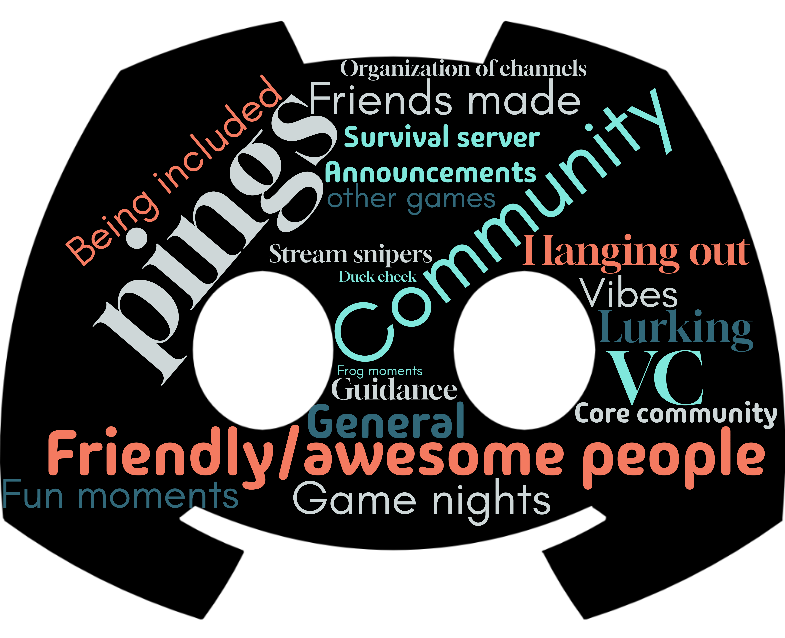
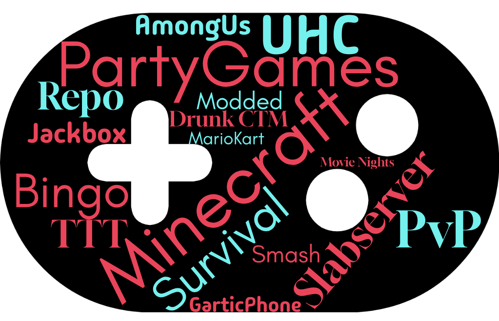
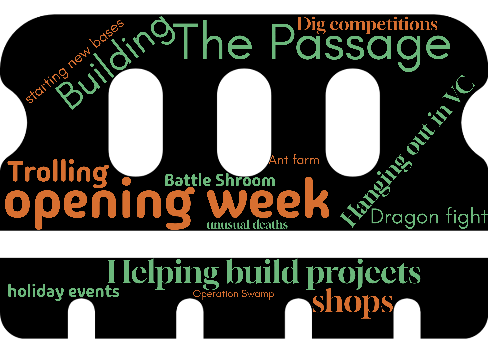
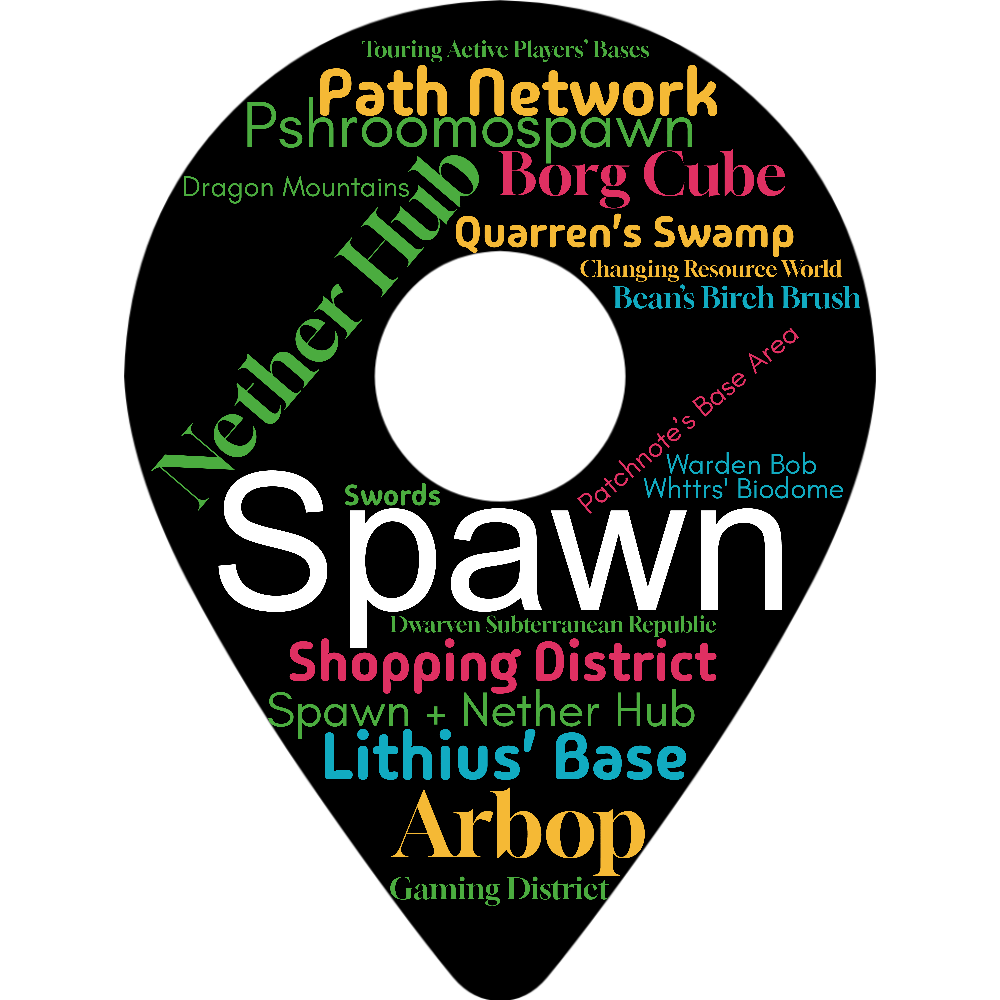
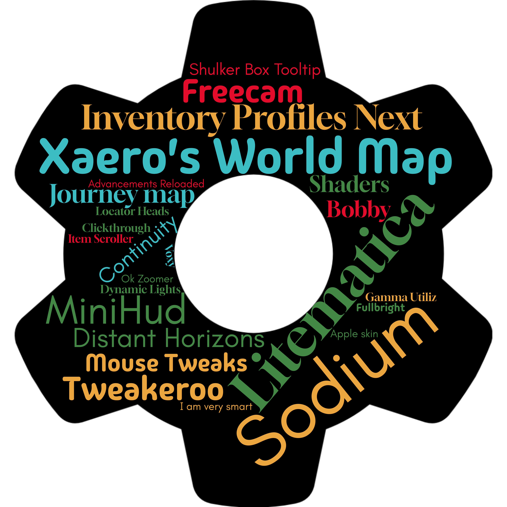
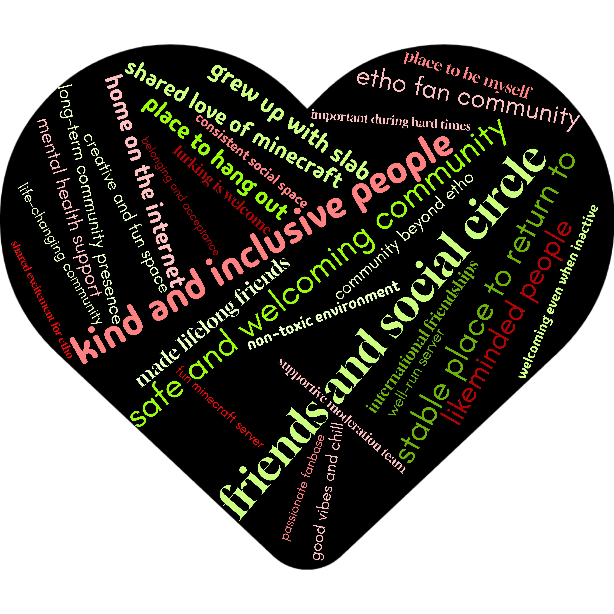

The Great Slabserver Poll 2026 Results
General
What age category are you in?
Question 1
How do you identify your gender?
Question 2
What country do you live in?
Question 3
(US members) Which state do you live in?
Question 4
What UTC offset are you in?
Question 5
How many languages do you speak?
Question 6
Which editions of Minecraft do you play?
Question 7
What devices do you play Minecraft on?
Question 8
How long have you been part of the Discord/Slabserver community?
Question 9
How did you end up joining the Discord and/or Community Servers?
Question 10
How often do you watch Etho's videos?
Question 11
Which of Etho's current series did you watch during 2025?
Question 12
Are there any other Hermits that you regularly watch?
Question 13
Community
What's your favourite part of our Discord?
Question 15

{kind=link}
What is your favourite Etho Discord channel?
Question 16
Which is your favourite robot overlord (Etho Discord bot)?
Question 17
Gamenights
Have you taken part in Gamenight events hosted within the Discord?
Question 18
Have you organized a Gamenight before?
Question 19
How well do you feel the #gamenight channel functions in its current form?
Question 21
Do you think #gamenight would be improved by making it a forum channel (such as #feedback or #community-bulletin) with one post/thread per game or even gamenight?
Question 22
Do you think #gamenight needs a slowmode?
Question 23
What games or voice channel activities would you like to see more Gamenights organized for?
Question 24

{kind=link}
Discord
How much do you use each of the following categories of our Discord?
Question 26
Slabserver Wiki
Community awareness, usage and intent to contribute
Nexus
Have you played on the Nexus server?
What is your favourite server on the Nexus?
Question 44
Survival
Do you play on our Survival server?
Question 47
Total Playtime by country (S4)
What is your favourite memory of Season 4 so far?
Question 48

{kind=link}
What's your favourite area on the server?
Question 49

{kind=link}
What do you think of the current way Phantoms are handled on Slabserver?
Question 51
Do you use a vanilla or modded Minecraft client?
Question 54
If you use a modded Minecraft client, what's the one Minecraft mod you can't live without on Slabserver?
Question 55

{kind=link}
Do you use any resource packs on Slabserver?
Question 56
Do you believe that the blockExplosionDropDecay and mobExplosionDropDecay gamerules should be set to False?
Question 57
Do you see yourself making/updating any farm(s) to use the new blockExplosionDropDecay and mobExplosionDropDecay gamerules within the next 12 months, if the gamerule was changed?
Question 58
Should such a change be trialed in the Resource World first, if the gamerule was changed?
Question 59
Extra
Chicken Jockeys
"After the unfortunate success of 'A Minecraft Movie' last year, and having now acquired Warner Bros, Netflix have realised that there is no depths of quality that a sequel could sink to, that doesn't also make them another $950 million.
The previous lead CGI expert at Warner Bros has also mysteriously vanished in Florida, with reports that he was eaten by a bald green man vaguely resembling Shrek.
Netflix is therefore in dire need of a new "Chicken Jockey" for "A Minecraft Movie 2", and is refusing to spend the budget to hire someone new.
You may therefore pick TWO members of the staff team to play the Chicken Jockey. Who do you choose to play the Chicken, who do you choose to play the Jockey, and why?"
What significance does our community hold to you? What is most important to you within our community, and what does it represent for you?
Question 69

{kind=link}